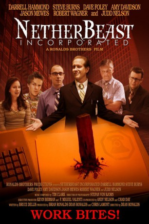

#9398 Vampire Office - Büro mit Biss
Alternativ: Netherbeast Incorporated
 
 IMDB-Wertung: 5.8 / 10
IMDB-Wertung: 5.8 / 10  Metascore: 0
Metascore: 0 
An offbeat hilarious comedy with a quirky twist on the vampire tale set in modern day corporate America. Employees of Berm-Tech Industries, Inc. have kept the family secret for a long time. For years it has been business as usual, until the top vampire in charge contracts a dreaded disease, becomes senile forgetting that he s a vampire and starts killing off other vampire colleagues. A human efficiency expert and "Dead Mike's" replacement are invited to work at Berm-Tech but soon they discover that some of their associates are not what they appear to be.
Jahr: 2007
Dauer: 88 Minuten
FSK:
Land: USA Studio: Well Go USA EntertainmentTonspuren:
Untertitel: Deutsch,
Auflösung: 1080p (1920x1080) Größe: 5478 MB
Genre: Horror, Komödie
Regisseur: Dean Matthew Ronalds
Drehbuch: Bruce Dellis
Soundtrack: Tim Clark
Darsteller:
- Steve Burns als Otto Granberry
 Darrell Hammond als Turner Claymore
Darrell Hammond als Turner Claymore Dave Foley als Henry Welby
Dave Foley als Henry Welby- Amy Davidson als Pearl Stricklett
 Judd Nelson als Steven P.D. Landry
Judd Nelson als Steven P.D. Landry Jason Mewes als 'Waxy' Dan Paraffin
Jason Mewes als 'Waxy' Dan Paraffin- Brian Ronalds als Dow Byrum
- Maiz Lucero als Emmitt Neely
- Bob Rue als Bunyan Pritchett
- Jeremy Childs als Cecil Crenshaw
- Joshua Childs als Amos Crenshaw
- Bill Lippincott als Alexander Graham Bell
 Robert Wagner als President James A. Garfield
Robert Wagner als President James A. Garfield- John Schile als Dr. Myron Berman
- Laura Durant als Myrtie Van Hoover
- Max Bullis als Elton
- Kevin Berman als Hamilton Veale
- Bruce Dellis als Franklin Abercrombie
- Amanda Melby als Hazel Von Borscht
- Jennifer Pfalzgraff als Esther Thrillington
- Carin Sprague als Berman's Assistant
- Tony D'Alessio als Berm-Tech Employee
- Deon Doughty als Berm-Tech Employee
- Hope Latimer als Berm-Tech Employee
- Louie Palmieri als Berm-Tech Employee
- Jessica Godber als White House Medical Staff
- Aaron Ginn-Forsberg als Featured Extra
- Cristen Irene als Featured Extra
- Rita Kurtz als Featured Extra
- Jessica Rothert als Featured Extra
- Cathy Rankin als Jewel Hightower
- John Dobradenka als Mike Yarrow
- Robyn Allen als Rebecca Sibley
- Bruce Halperin als Monroe Overton
- Rich Kozlowski als Hickman Moody
- Charlotte Bell als Scarred NetherWoman
- Andy Nelson als Thanksgiving Meal Eater
- Ronald Axell als Berm-Tech Employee
- Michael Fleck als Berm-Tech Employee
- Don Ford als Berm-Tech Employee
- Karen Garcia als Berm-Tech Employee
- Connie Hunt als Berm-Tech Employee
- Sonny Kimling als Berm-Tech Employee
- Garry Myers als Berm-Tech Employee
- Adam Ronalds als Berm-Tech Employee
- Becky Saunders als Berm-Tech Employee
- Greg Seki als Berm-Tech Employee
- Joanna St. Clair als Berm-Tech Employee
- Stacy Lee als White House Medical Staff
- Camille Nighthorse als White House Medical Staff
Datei: X:\2007(N-Z)\Vampire Office - Büro mit Biss (2007, FSK, 1920x1080).mkv seit 30.08.2018
Festplatte: HD 2007(A-Z)-2008(A-F)
 Es gibt insgesamt 56 Filme in der Gruppe '2007(N-Z)'
Es gibt insgesamt 56 Filme in der Gruppe '2007(N-Z)'